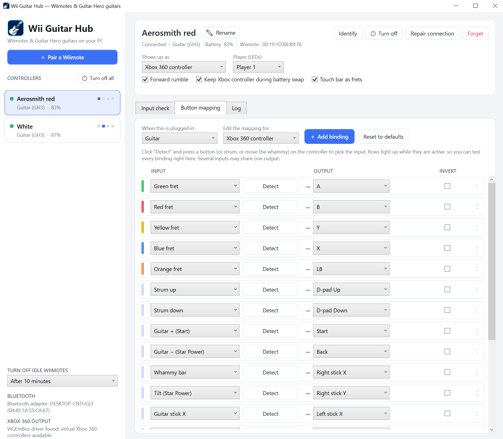

What it does
Wii Guitar Hub runs on your Windows PC and turns each Wiimote into an Xbox 360 controller or keyboard keys. Plug a Guitar Hero guitar into the Wiimote and frets, strumming, whammy and Star Power tilt all work.
- Pair once, then just press a button
- Pair with the red SYNC button. After that, any button press reconnects it, even after new batteries.
- Several controllers at once
- Each one gets its own player number, shown on the Wiimote's LEDs.
- Live input check
- Press green and see green light up. Check every fret, the whammy and tilt before you play.
- Remap any button
- Every button, fret, whammy and stick can send whatever you like.
- Names you'll recognise
- Call them “Red guitar” or “Aerosmith” instead of a Bluetooth address.
- Saves batteries
- Turn Wiimotes off from the PC, or let idle ones switch off by themselves.
- Low-battery warning
- A Windows notification plus a short rumble on the guitar, so you notice it mid-song.
- Connection check
- Signal bars and a 20-second range test tell you if the spot you play from is good enough.
- Lives in the tray
- Start with Windows and stay out of the way. Ideal for a dedicated Clone Hero or YARG PC.
Windows only
Wii Guitar Hub uses Windows' own Bluetooth stack and Xbox controller drivers, so it does not run on macOS or Linux. You need:
- A Windows 10 or 11 PC with Bluetooth, built in or a USB Bluetooth adapter.
- An original Nintendo Wii Remote, the normal one or “Motion Plus inside”. Most third-party Wiimotes don't work on a PC.
- Optional: a Wii Guitar Hero guitar (Guitar Hero III, World Tour, 5, Warriors of Rock, or a compatible third-party one) or a Nunchuk.
How to set it up
About five minutes, and you only pair each Wiimote once.
-
Install ViGEmBus
This free driver creates the virtual Xbox 360 controllers. Download
ViGEmBus_…_x64_x86_arm64.exefrom the ViGEmBus releases page, run it, and restart if asked. Only want keyboard output? You can skip this. -
Download and start Wii Guitar Hub
Get
WiiGuitarHub-win-x64.zipfrom the latest release, extract it to a folder, and double-click WiiHub.exe. Nothing else to install; .NET is included.Windows SmartScreen may warn you the first time, because the app isn't code-signed. Click More info, then Run anyway.
-
Pair your Wiimote
- Click + Pair a Wiimote. It starts searching right away.
- Open the battery cover and press the small red SYNC button. The blue LEDs blink.
- Within seconds it says paired, the Wiimote rumbles and its player LED lights up.
- Press SYNC on the next Wiimote, or close the window.
-
Plug in the guitar
Connect the Wiimote's cable to the guitar and slide it into the slot. Wii Guitar Hub detects the guitar on its own. Open Input check, press each fret, strum and push the whammy to see it all light up.
For Star Power, calibrate tilt once: hold the guitar normally and click Rest, tilt the neck up and click Tilted.
-
Set up your game
In Clone Hero or YARG, the guitar appears as an Xbox 360 controller. Assign frets, strum, whammy and Star Power once in the game's controller settings; it remembers them.
From then on: pick up a guitar, press any button, play.
Make every button yours
The Button mapping tab lists every input with what it sends. Click Detect and press a button to pick the input; in keyboard mode, click Press key to pick the key. Rows light up while you press them, so you can test right there.
Choose per controller whether it shows up as an Xbox 360 controller, keyboard, or both. Keyboard mode helps with games that don't support controllers.
| Guitar | Xbox 360 | Keyboard |
|---|---|---|
| Frets | A B Y X LB | 1–5 |
| Strum up / down | D-pad up / down | ↑ ↓ |
| Star Power (− or tilt) | Back / right stick Y | Space |
| Whammy | Right stick X | W |
| + | Start | Enter |

When something's off
The most common fixes. The full guide covers the rest.
The pairing window doesn't find my Wiimote
- Press the red SYNC button again while the window is open. A Wiimote is only findable for about 20 seconds after pressing SYNC.
- Paired with this PC before? Press any button instead. If it doesn't connect, remove it under Wiimotes Windows already knows and pair again with SYNC.
- Check that Bluetooth is on in Windows. Third-party Wiimotes usually don't work.
It doesn't reconnect after changing batteries
- It was probably paired with 1 + 2 instead of SYNC. Remove it in the pairing window and pair again with the red SYNC button.
- Wiimotes never connect on their own while idle. Press a button.
Notes are missed or frets get stuck
- Run the range test in Input check from where you play. Dropouts mean the Bluetooth link is struggling.
- Move closer, or put a USB Bluetooth adapter on your desk with a short extension cable.
Xbox controller mode doesn't work
- Install ViGEmBus (step 1) and restart your PC.
Keyboard mode doesn't reach my game
- Windows blocks key presses to games running as administrator. Start Wii Guitar Hub as administrator too, or use Xbox 360 mode.